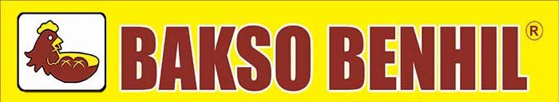
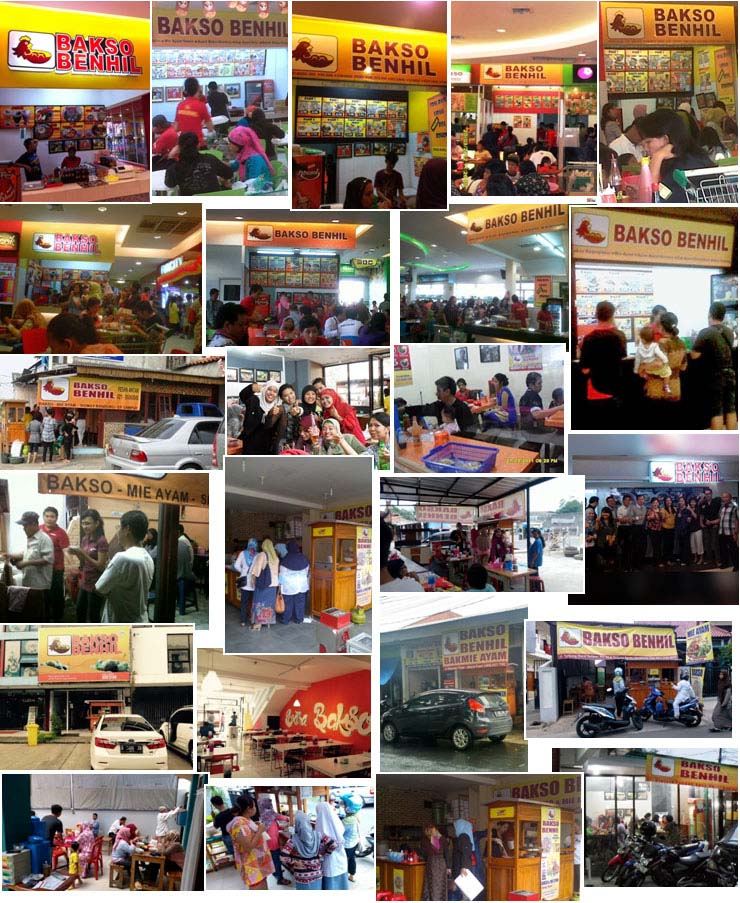

Waralaba Bakso Benhil Peluang Usaha Kuliner Yang Populer

Bakso, Salah Satu Kuliner Legendaris Indonesia
Bisa dibilang semua orang di Indonesia mengetahui makanan yang namanya bakso. Tua muda, pria wanita, semua orang di Indonesia pasti pernah mencicipi makanan berbentuk bulat ini. Rasa bakso yang sudah merakyat dan disukai oleh jutaan orang Indonesia menjadikan bisnis bakso menjadi salah satu bisnis kuliner yang sangat menjanjikan.
Berawal dari hobi menyantap kuliner Indonesia di berbagai tempat, tidak hanya di Jakarta, tetapi juga di berbagai kota dan desa di Indonesia. Lahirlah Bakso Benhil, karena hampir seluruh masyarakat Indonesia menyukai makanan ini.
Tidak hanya di perkotaan, di pedesaan pun bakso menjadi makanan yang disukai oleh masyarakat. Dan hebatnya lagi, tidak terbatas hanya pada kalangan tertentu saja, bakso disukai oleh mayoritas orang dari berbagai kalangan. Makanan ini sangat diterima oleh masyarakat Indonesia.
Mengapa Harus Ikut Peluang Usaha Bakso Benhil?
Merk Bakso Benhil sudah terkenal dan sering diliput oleh berbagai media cetak maupun media elektronik, seperti: Harian Kontan, majalah Franchise, tabloid Business Opportunity, Kompas Online dan juga media televisi seperti Trans7. Bakso Benhil juga telah mendapatkan beberapa penghargaan dari beragam media waralaba.
Produk Bakso Benhil (Bakso dan Mie Ayam) telah teruji dan disukai oleh para artis/selebriti. Tidak jarang pula Bakso Benhil dipesan untuk acara-acara artis/selebriti.
Bakso adalah makanan yang sangat disukai oleh masyarakat Indonesia. Bahkan mantan Presiden Amerika Serikat, Barrack Obama pun menyukai bakso. Semua kalangan menyukai bakso dari berbagai golongan baik di perkotaan maupun pedesaan sehingga pangsa pasarnya luas.
Operasional yang cukup mudah, bisa dijalankan oleh siapapun dengan training yang cukup.
Halal, higienis dan sehat. Produk Bakso Benhil tidak menggunakan bahan pengawet, borax atau formalin. Aman dan baik untuk dikonsumsi.
Modal usaha dapat disesuaikan dengan kemampuan calon peminat. Modal usaha relatif terjangkau, Rp 4 juta dapat produk sekitar 500-600 porsi.
Bisnis Bakso Benhil telah mencetak mitra-mitra sukses yang dapat menwujudkan impian menjadi seorang entrepreneur.

Persyaratan Mitra Usaha Bakso Benhil
- Anda harus memiliki tempat usaha (milik sendiri maupun sewa),
- menyiapkan peralatan dan perlengkapan usaha bakso dan mie ayam.
- Memiliki karyawan (tersedia training) dan juga melakukan pembelian awal produk Bakso Benhil minimal senilai Rp 6 juta.
- Lokasi usaha tidak berdekatan dengan lokasi outlet Bakso Benhil yang sudah ada lebih dahulu.
Tagar: #bakso benhil #waralaba kuliner #waralaba bakso #peluang bisnis bakso #peluang usaha bakso #bisnis kuliner #peluang usaha kuliner #peluang bisnis kuliner